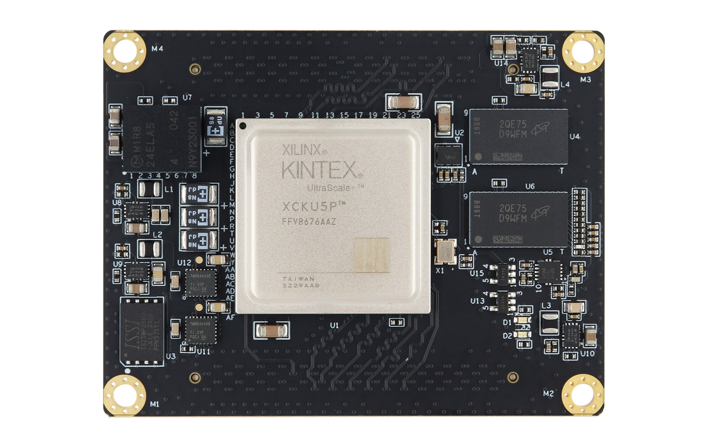
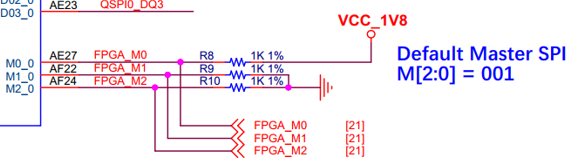

XME0835 Reference Manual
WeChat Public Number:

●1. Overview
The XME0835 is an industrial-grade System on Module (SoM) developed by Microphase Technology based on the Xilinx Kintex UltraScale+ SoC. Customization options are available, subject to minimum order quantity requirements. Please contact our sales team for more information: sales@microphase.cn.
This module integrates two 1 GB DDR4 chips, forming a 32-bit data bus with a total capacity of 2 GB. It supports a maximum operating clock frequency of 1333 MHz (data rate 2666 Mbps), meeting system requirements for high-bandwidth data processing. Additionally, the core board includes a 32 MB QSPI flash that serves as a large-capacity storage device for system use.
The core board provides 152 single-ended I/O lines (configurable as 76 pairs of differential I/O):
HD I/O: 64 single-ended (configurable as 32 pairs of differential), 24 pairs with adjustable voltage
HP I/O: 88 single-ended (configurable as 44 pairs of differential), all pairs with adjustable voltage
Furthermore, 16 pairs of GTY high-speed differential RX/TX signals are routed to the connector. All traces from FPGA I/O pins to the connector are length-matched differential pairs, designed with 50-ohm single-ended and 100-ohm differential impedance.
○ Board Layout

○ Key Features
FPGA: Xilinx XCKU5P-2FFVB676I
DDR4: 2 GB DDR4 RAM, 32-bit
Clocks:1 100 MHz single-ended system clock
1 200 MHz differential system clock
Flash: 32 MB
LEDs: 1 Power LED, 1 FPGA Done LED
GTY Transceivers: 16 channels
GPIO:
HD I/O: 64 (32 LVDS pairs), 24 adjustable-voltage pairs, 8 × 3.3 V pairs
HP I/O: 88 (44 LVDS pairs), all with adjustable voltage levels
Connectors: 2 × 168-pin high-speed board-to-board connectors
○ Mechanical Spec

●2. Functional Resources
○ FPGA
Logic Cells: 475 K
Look-Up Tables (LUTs): 217 K
Flip-Flops: 434 K
Block RAM: 16.9 Mb
UltraRAM: 18.0 Mb
DSP Slices: 1,824
○ DDR4
The XME0835 is equipped with two Micron DDR4 SDRAM chips (MT40A512M16LY-062E), each with a capacity of 1 GB, providing a 32-bit data bus. The SDRAM supports an operating clock frequency of up to 1333 MHz (2666 Mbps data rate) and is connected to FPGA I/O banks BANK66 and BANK67.
DDR4 hardware design requires careful attention to signal integrity. Our circuit and PCB layouts incorporate matched series and termination resistors, controlled-impedance routing, and trace length matching to ensure stable high-speed operation.
The connection diagram between the Zynq banks and the DDR4 interface is shown below:

DDR4-to-FPGA pin assignment:
| Signal Name | Pin | Signal Name | Pin |
|---|---|---|---|
| PL_DDR4_D0 | C22 | PL_DDR4_DQS_N1 | A18 |
| PL_DDR4_D1 | B24 | PL_DDR4_DQS_P0 | C21 |
| PL_DDR4_D2 | C23 | PL_DDR4_DQS_P1 | A17 |
| PL_DDR4_D3 | A24 | PL_DDR4_DQS_N2 | E20 |
| PL_DDR4_D4 | D21 | PL_DDR4_DQS_N3 | E17 |
| PL_DDR4_D5 | B22 | PL_DDR4_DQS_P2 | F20 |
| PL_DDR4_D6 | E21 | PL_DDR4_DQS_P3 | E16 |
| PL_DDR4_D7 | A25 | PL_DDR4_ODT | H24 |
| PL_DDR4_D8 | A19 | PL_DDR4_PAR | J25 |
| PL_DDR4_D9 | C17 | PL_DDR4_NRST | L25 |
| PL_DDR4_D10 | A20 | PL_DDR4_NWE | H26 |
| PL_DDR4_D11 | B17 | PL_DDR4_A0 | D25 |
| PL_DDR4_D12 | B20 | PL_DDR4_A1 | D23 |
| PL_DDR4_D13 | A15 | PL_DDR4_A2 | D26 |
| PL_DDR4_D14 | B19 | PL_DDR4_A3 | D24 |
| PL_DDR4_D15 | B15 | PL_DDR4_A4 | E26 |
| PL_DDR4_D16 | F18 | PL_DDR4_A5 | C26 |
| PL_DDR4_D17 | G21 | PL_DDR4_A6 | G22 |
| PL_DDR4_D18 | F19 | PL_DDR4_A7 | B25 |
| PL_DDR4_D19 | D20 | PL_DDR4_A8 | F22 |
| PL_DDR4_D20 | E18 | PL_DDR4_A9 | C24 |
| PL_DDR4_D21 | D19 | PL_DDR4_A10 | E25 |
| PL_DDR4_D22 | G20 | PL_DDR4_A11 | F23 |
| PL_DDR4_D23 | D18 | PL_DDR4_A12 | E23 |
| PL_DDR4_D24 | H17 | PL_DDR4_A13 | B26 |
| PL_DDR4_D25 | D16 | PL_DDR4_NACT | J26 |
| PL_DDR4_D26 | G16 | PL_DDR4_NALERT | L24 |
| PL_DDR4_D27 | D15 | PL_DDR4_BA0 | H22 |
| PL_DDR4_D28 | E15 | PL_DDR4_BA1 | H21 |
| PL_DDR4_D29 | C16 | PL_DDR4_BG0 | G26 |
| PL_DDR4_D30 | H16 | PL_DDR4_NCAS | F25 |
| PL_DDR4_D31 | G17 | PL_DDR4_NRAS | F24 |
| PL_DDR4_DM0 | A22 | PL_DDR4_CKE | M24 |
| PL_DDR4_DM1 | C18 | PL_DDR4_CKN | G25 |
| PL_DDR4_DM2 | H18 | PL_DDR4_CKP | G24 |
| PL_DDR4_DM3 | G15 | PL_DDR4_NCS | H23 |
| PL_DDR4_DQS_N0 | B21 |
○ JTAG
The JTAG signal link of the XME0835 is connected to the expansion connector.
| Signal | JM1 Pin | Description |
|---|---|---|
| FPGA_TCK | 25 | Input (1.8 V) |
| FPGA_TDI | 24 | Input (1.8 V) |
| FPGA_TDO | 21 | Output (1.8 V) |
| FPGA_TMS | 23 | Input (1.8 V) |
○ Boot Configuration
The XME0835 uses MASTER SPI boot mode.
Boot configuration schematic:

○ Quad-SPI Flash
The board includes a 32 MB QSPI flash for storing the initial FPGA bitstream, user applications, and data.

| Location | Model | Capacity | Manufacturer |
|---|---|---|---|
| U3 | IS25WP256D-JLLE | 32 MB | ISSI |
○ Clocks
The XME0835 core board provides one 100 MHz single-ended clock and one 200 MHz differential clock.
100 MHz clock:
| Signal | FPGA Pin Name | Pin Number |
|---|---|---|
| SYS_CLK | IO_L12P_T1U_N10_GC_66 | J23 |
| EMCCLK | IO_L24P_T3U_N10_EMCCLK_65 | N21 |
200 MHz clock:
| Signal | FPGA Pin Number | Description |
|---|---|---|
| SYS_CLK_P | K22 | Positive differential input |
| SYS_CLK_N | K23 | Negative differential input |
○ Power
Supports a wide input voltage ranging from 8 V to 14 V. A 12 V input is recommended.
○ LEDs
The XME0835 board provides two LEDs, the power indicator and the FPGA configuration status light.
○ Expansion Ports
The XME0835 uses two high-speed board-to-board connectors to route FPGA signals.
2 × FX10A-168P-SV, 168-pin, 0.5 mm pitch
| Core Connector Model | Carrier Connector Model | Manufacturer | Stack Height |
|---|---|---|---|
| FX10A-168P-SV | FX10A-168S-SV | HIROSE | 4 mm |
FPGA banks, I/O counts, and board-to-board connector allocation:
| FPGA Bank | Connector | I/O Count | Voltage | Description |
|---|---|---|---|---|
| Bank87 | JM1 | 24 | Adjustable | 24 single-ended, configurable as 12 differential pairs |
| Bank86 | JM1 | 24 | Adjustable | 24 single-ended,configurable as 12 differential pairs |
| Bank84 | JM1 | 16 | 3.3 V | 16 single-ended, configurable as 8 differential pairs |
| Bank227 | JM1 | 18 | - | 1 pair of CLK pair, 4 pairs of TX/RX |
| Bank226 | JM1 | 18 | - | 1pair of CLK pair, 4 pairs of TX/RX |
| Bank65 | JM2 | 40 | Adjustable | 40 single-ended, configurable as 20 differential pairs |
| Bank64 | JM2 | 48 | Adjustable | 48 single-ended, configurable as 24 differential pairs |
| Bank224 | JM2 | 18 | - | 1 pair of CLK, 4 pairs of TX/RX |
| Bank225 | JM2 | 18 | - | 1 pair of CLK, 4 pairs of TX/RX |
Notes:
JTAG (JM1 Pins 21–25) level is 1.8 V.
Bank87 I/O level depends on JM1 Pins 49&50 voltage input, input range 1.2V~3.3V.
Bank86 I/O level depends on JM1 Pins 79&80 voltage input, input range 1.2V~3.3V.
Bank84 I/O voltage is 3.3 V.
Bank65 I/O level depends on JM2 Pins 29&30 voltage input, input range 1.0V~1.8V.
Bank64 I/O level depends on JM2 Pins 69&70 voltage input, input range 1.0V~1.8V.
Please refer to the ‘XME0835 Pinout Table’ for detailed pin definitions of the XME0835.